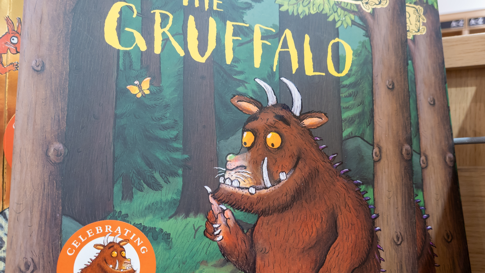

Аксель Шеффлер, иллюстратор книги «Груффало» (суммарные продажи его книг — более 18 млн экземпляров), признался, что его всерьёз тревожат генеративные нейросети. Если попросить ChatGPT нарисовать монстра из лесной сказки, через минуту на экране появляется картинка, которую невозможно спутать с оригиналом: отличаются только фоны. Шеффлер подчёркивает: это однозначно его персонажи, и он всерьёз рассматривает иск — сначала к компаниям из Кремниевой долины, а лучше вместе с другими художниками.
По данным немецкой прессы, художник уже обсуждает с своими издателями институциональную поддержку и ищет юридических консультантов. Он далеко не первый: книжная группа Penguin Random House первой в Европе пошла в суд на OpenAI — совместно с автором «Маленького дракона Кокоса» Инго Зигнером. Издательство «Карлсбах» судится из-за «NEINhorn»: претензия в том, что ChatGPT выдаёт целые печатные макеты детских книжек — с обложкой, выходными данными, фейковым ISBN и логотипом издательства.
В судебном отзыве по делу Penguin Random House OpenAI настаивает: нейросеть не хранит данные как классическая база и не воспроизводит их один в один. Модель, по версии концерна, выучивает лишь «паттерны и взаимосвязи», а из них генерирует якобы новое. Именно этот аргумент — «вдохновлён, не скопировано» — теперь придётся оспаривать и Шеффлеру.
Именно детская литература оказалась на передовой исков: там история неразрывно сцеплена с рисунком, и визуальное сходство человеческой работы и ИИ-подделки видно невооружённым глазом. В колонке для The Bookseller Шеффлер сформулировал жёстко: ИИ — реальная угроза для иллюстраторов, и правительства обязаны действовать. Отдельного официального анонса самой ИИ-компании по этой истории нет — речь о заявлении автора и подготовке разбирательства.
Если Шеффлер всё-таки подаст иск, давление на техногигантов вырастет: за каждым детским персонажем стоят миллионные тиражи и десятки лет узнаваемости. Для индустрии генеративного ИИ это значит, что вопрос «учился на чужом — плати» перестаёт быть теоретическим и переезжает в залы суда.
Оригинал: https://www.heise.de/news/KI-Kopien-des-Grueffelo-Illustrator-Axel-Scheffler-will-gegen-Betreiber-klagen-11491779.html (heise online)